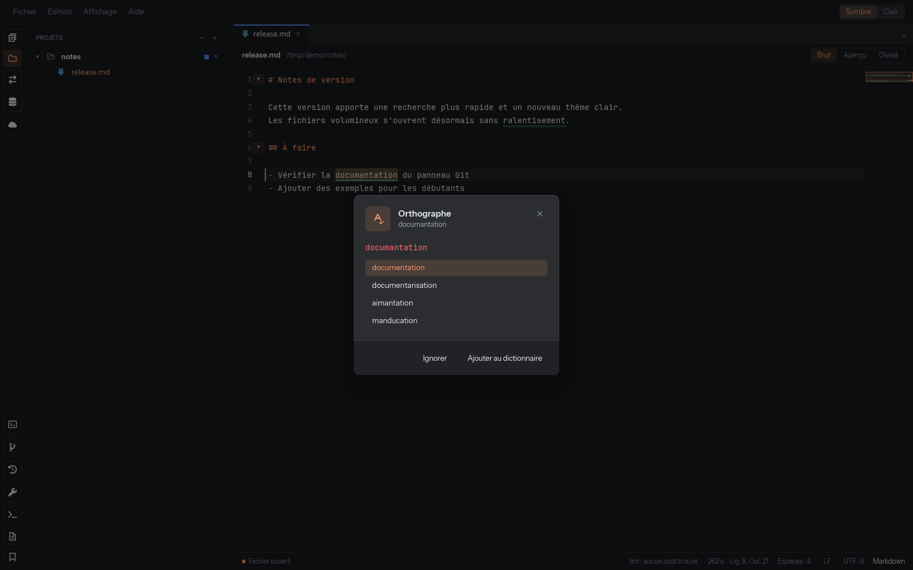
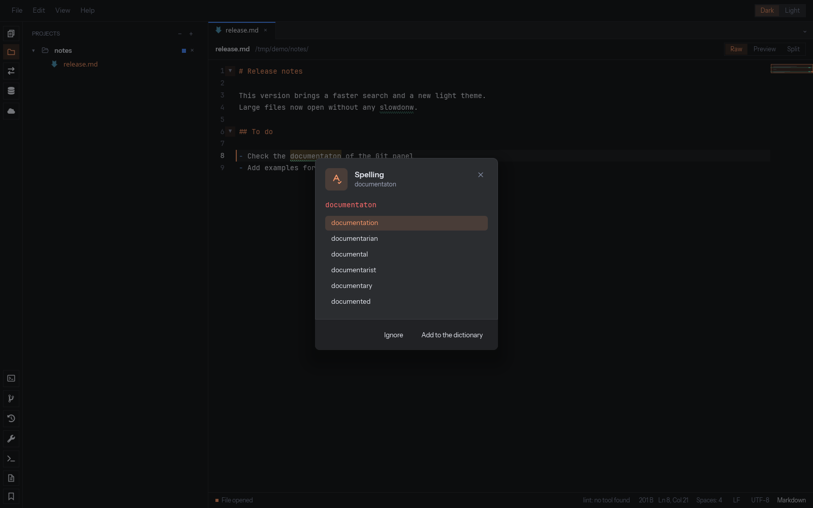

OrthographeSpelling
Les mots mal orthographiés soulignés, avec suggestions et dictionnaire personnel.Misspelled words underlined, with suggestions and a personal dictionary.


Un fichier Markdown avec quelques fautes soulignées et le menu de suggestions ouvert.A Markdown file with a few underlined mistakes and the suggestions menu open.
Capture à venirScreenshot to comePrésentationOverview
Un correcteur orthographique discret basé sur les dictionnaires Hunspell de la machine : il souligne dans la prose (texte, Markdown hors code) et dans les commentaires des programmes.
A quiet spell checker based on the machine's Hunspell dictionaries: it underlines in prose (text, Markdown outside code) and in the comments of programs.
FonctionnementHow it works
- Souligne les mots inconnus des dictionnaires Hunspell, dans la prose et dans les commentaires du code.Underlines the words the Hunspell dictionaries do not know, in prose and in code comments.
- Ctrl+Alt+S propose des suggestions pour le mot sous le curseur, l'ajoute au dictionnaire personnel ou l'ignore.Ctrl+Alt+S shows suggestions for the word at the cursor, adds it to the personal dictionary or ignores it.
DictionnairesDictionaries
- Cherchés dans le dossier de données du plugin (
dictionaries/),~/.local/share/hunspell,/usr/share/hunspell,/usr/share/myspell, ceux de Homebrew et~/Library/Spellingsur macOS.Looked for in the plugin's data folder (dictionaries/),~/.local/share/hunspell,/usr/share/hunspell,/usr/share/myspell, Homebrew's and~/Library/Spellingon macOS. - Un
.dicavec son.aff:apt install hunspell-froubrew install hunspellles installent.A.dicwith its.aff:apt install hunspell-frorbrew install hunspellleave them.
RaccourcisShortcuts
| TouchesKeys | ActionAction |
|---|---|
| Ctrl Alt S | Suggestions pour le mot courantSuggestions for the current word |
Tous les raccourcis se changent dans Préférences › Raccourcis (regroupés sous le nom du plugin).
Every shortcut can be changed in Preferences › Shortcuts (grouped under the plugin's name).
Installer et réglerInstall and configure
Ouvrez Fichier › Préférences… › Plugins, cherchez « Orthographe » et cliquez sur Installer.
Open File › Preferences… › Plugins, search for “Spelling” and click Install.
PrérequisRequirements
- Au moins un dictionnaire Hunspell (
hunspell-fr,hunspell-en-us…).At least one Hunspell dictionary (hunspell-fr,hunspell-en-us…).
RéglagesSettings
La langue du dictionnaire se règle dans la page « Orthographe » des Préférences.
The dictionary language is set on the Spelling page of the Preferences.
Code source et licenceSource and license
Dépôt : ardoise-editor/plugin-spell · identifiant ardoise.spell · version 1.0.2 · licence MIT.
Repository: ardoise-editor/plugin-spell · id ardoise.spell · version 1.0.2 · MIT license.